Справочник по системному программированию · модуль 2 · процессы
2.3
Процессорное время
В главе ядро агента получает функцию core_proc_cpu: она читает процессорное время процесса и возвращает его в микросекундах. Разобрано, в каких единицах время считают Windows, macOS и Linux, как их перевести, что отвечает система про несуществующий и чужой процесс и почему загрузка — это прирост времени за паузу. В конце мозг агента находит самый занятый процесс, а копия ядра с одной изменённой строкой показывает ошибку в единицах, которую не видит компилятор.
- Категория
- Процессы
- Уровень
- Начальный
- Что получится
agent/core/core_cpu.c,cpu_top.c, новыйbrain.py- Сколько занимает
- Пара 6, около сорока пяти минут за компьютером
§1Задача главы
В ЛР 6 загрузку процессора считали вручную: дважды смотрели процессорное время процесса и делили прирост на паузу. В этой главе то же делает агент. Ядро получает функцию core_proc_cpu: она читает процессорное время процесса по его номеру и возвращает его в микросекундах. Мозг вызывает её для всех процессов дважды с паузой в секунду и находит те, что загружают процессор.
У трактора есть счётчик моточасов: сколько часов работал двигатель за всю жизнь машины. Чтобы узнать, насколько трактор был занят сегодня, механик записывает показание утром и вечером и вычитает одно из другого.
У трактора один двигатель и один счётчик. Процесс может работать на нескольких ядрах сразу, и за секунду его время иногда вырастает больше чем на секунду.
Схема показывает путь замера целиком: верхняя строка — один процесс, нижняя — загрузка из двух снимков.
Путь замера: от мозга до процентов
мозг
proc_cpu(pid)номер процессаядро агента
core_proc_cpuGetProcessTimesproc_pidinfo/proc/PID/statсистема
время процессав своих единицахядро агента
микросекундыuser_us, kernel_usмозг
снимок 1время всех процессовмозг
снимок 2то же ещё размозг
cpu_load()проценты, самые занятые первымиВерхняя строка — один замер одного процесса, нижняя — как мозг из двух снимков получает загрузку. Бирюзовые карточки — Python, янтарные — ядро на C, серые — система.
В верхней строке ядро агента берёт у системы счётчик процесса и переводит его в микросекунды. Процессорное время — сколько времени ядра процессора выполняли код процесса за всю его жизнь. Система хранит его двумя числами: время в коде самой программы и время в ядре системы, когда оно работало по просьбе процесса, например читало файл. Нижняя строка — работа мозга: два снимка и разница между ними. Сам счётчик загрузку не показывает, её даёт только прирост за известную паузу.
Зачем это нужно в работе
- Находить виновника. Когда сервер «тормозит», первый вопрос — какой процесс занял процессор. Агент отвечает списком самых занятых процессов.
- Различать «работает» и «завис в цикле». Процесс, который должен ждать запросов, а держит ядро на 100%, почти наверняка крутит бесконечный цикл.
- Считать честно. Мониторы показывают проценты в разных шкалах, как было видно в ЛР 6. Агент считает загрузку сам по одной формуле, и 100% у него — всегда одно ядро.
Глава продолжает репозиторий sysprog-start после главы 2.2: в agent/core лежат core.h, core_info.c, core_procs.c и core_spawn.c, в agent/brain — brain.py с запуском процессов. Команды выполняются во встроенном терминале VS Code, запущенного из окна x64 Native Tools Command Prompt for VS 2022, как в главе 2.2.Команды выполняются во встроенном терминале VS Code в папке agent/core.
Ответ ядра — два числа, поэтому первая часть начинается с их описания в core.h.
§2Шаг 1. Описать время процесса в core.h
Ядро отвечает двумя числами: user_us — сколько микросекунд процесс выполнял свой код, kernel_us — сколько микросекунд ядро системы работало по его просьбам. Микросекунда — миллионная доля секунды. Единица одна для трёх систем: мозг складывает и вычитает числа, не зная, откуда они пришли. Оба поля — int64_t: в 8 байт помещается почти 300 тысяч лет в микросекундах.
struct core_child { … }; CORE_API int core_spawn(char *const argv[], struct core_child *out); CORE_API int core_wait(struct core_child *child, int32_t timeout_ms, int32_t *exit_code);
struct core_child { … }; struct core_cpu { int64_t user_us; int64_t kernel_us; }; CORE_API int core_spawn(char *const argv[], struct core_child *out); CORE_API int core_wait(struct core_child *child, int32_t timeout_ms, int32_t *exit_code); CORE_API int core_proc_cpu(int64_t pid, struct core_cpu *out);
Структура занимает 16 байт, поля идут подряд:
У функции два параметра: pid — номер процесса, out — куда записать ответ. Как остальные функции ядра, она возвращает 0 при успехе и код ошибки системы при неудаче. Все случаи — в таблице:
Договор core_proc_cpu: что приходит в ответ
| Случай | Код | Что в ответе |
|---|---|---|
| процесс прочитан | 0 | user_us и kernel_us в микросекундах |
| процесса нет | 8732 | ничего |
| процесс чужой | 510 | ничего: прав не хватаетв Linux время любого процесса читается |
| ошибка в параметрах | 8722 | ничего |
Ноль в колонке «Код» — успех. Номера ошибок — системные: ERROR_INVALID_PARAMETER 87 и ERROR_ACCESS_DENIED 5ESRCH 3, EPERM 1, EINVAL 22ENOENT 2 — нет файла /proc/PID/stat, EINVAL 22.
Первая строка — обычный ответ. Вторая и третья случаются постоянно: в списке процессов из главы 2.1 сотни номеров, часть из них завершается раньше замера, часть принадлежит системе. Чужие процессы WindowsmacOS не даёт читать обычному пользователю.Linux показывает время любого процесса, поэтому кода «процесс чужой» у этой функции в Linux нет.
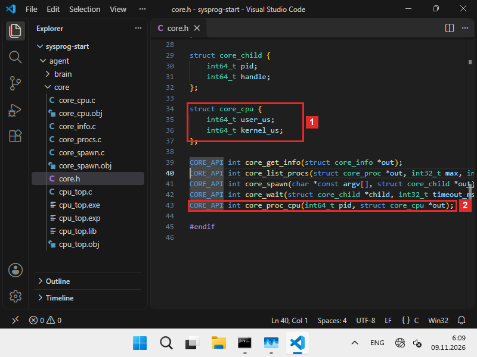
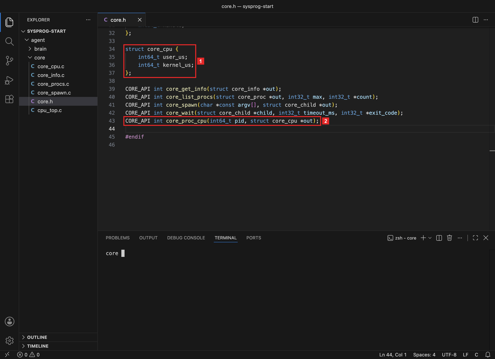
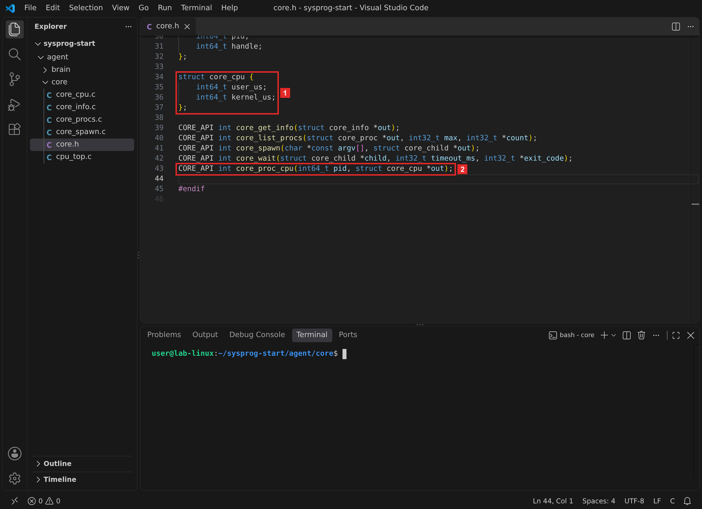
Что получилось.В core.h описаны структура на 16 байт и договор функции. Теперь её нужно написать для своей системы.
§3Шаг 2. Написать core_cpu.c
Функция — в новом файле agent/core/core_cpu.c, у каждой системы свой. Время процесса каждая система отдаёт в своих единицах, и функция переводит их в микросекунды:
В чём система считает время и как перевести в микросекунды
| Система | Что отдаёт | Единица | В микросекунды |
|---|---|---|---|
| Windows | FILETIME | 100 нс | ÷ 10 |
| macOS | pti_total_* | тик Mach: 41,7 нс на Apple, 1 нс на Intel | × numer ÷ denom ÷ 1000 |
| Linux | поля 14, 15 stat | тик часов: 10 мс | × 1 000 000 ÷ 100 |
Единица у каждой системы своя, и ни одна не равна микросекунде. Ошибка в переводе не мешает программе работать: числа выходят в несколько раз больше или меньше настоящих.
В каждой строке таблицы — путь от числа системы к микросекундам. Windows считает отрезки по 100 нс, и перевод — деление на 10. macOS считает тики Mach, их длину сообщает сама система дробью numer / denom. Linux считает тики часов ядра, их число в секунде даёт sysconf. Из этого следует правило: единицу нельзя угадывать, её берут из документации или у самой системы.
#include <windows.h> #include "core.h" static int64_t to_us(FILETIME t) { ULARGE_INTEGER v; v.LowPart = t.dwLowDateTime; v.HighPart = t.dwHighDateTime; return (int64_t)(v.QuadPart / 10); } int core_proc_cpu(int64_t pid, struct core_cpu *out) { FILETIME created, exited, kernel, user; if (out == NULL || pid < 0) return ERROR_INVALID_PARAMETER; HANDLE h = OpenProcess(PROCESS_QUERY_LIMITED_INFORMATION, FALSE, (DWORD)pid); if (h == NULL) return (int)GetLastError(); if (!GetProcessTimes(h, &created, &exited, &kernel, &user)) { DWORD err = GetLastError(); CloseHandle(h); return (int)err; } CloseHandle(h); out->user_us = to_us(user); out->kernel_us = to_us(kernel); return 0; }
#include <errno.h> #include <libproc.h> #include <mach/mach_time.h> #include "core.h" int core_proc_cpu(int64_t pid, struct core_cpu *out) { struct proc_taskinfo ti; mach_timebase_info_data_t tb; if (out == NULL || pid < 0) return EINVAL; int n = proc_pidinfo((int)pid, PROC_PIDTASKINFO, 0, &ti, sizeof ti); if (n <= 0) return errno != 0 ? errno : ESRCH; if (n < (int)sizeof ti) return ESRCH; mach_timebase_info(&tb); out->user_us = (int64_t)(ti.pti_total_user * tb.numer / tb.denom / 1000); out->kernel_us = (int64_t)(ti.pti_total_system * tb.numer / tb.denom / 1000); return 0; }
#include <errno.h> #include <stdio.h> #include <string.h> #include <unistd.h> #include "core.h" int core_proc_cpu(int64_t pid, struct core_cpu *out) { char path[64], line[512]; unsigned long long utime, stime; if (out == NULL || pid < 0) return EINVAL; snprintf(path, sizeof path, "/proc/%lld/stat", (long long)pid); FILE *f = fopen(path, "r"); if (f == NULL) return errno; size_t len = fread(line, 1, sizeof line - 1, f); fclose(f); line[len] = '\0'; char *close = strrchr(line, ')'); if (close == NULL) return EINVAL; if (sscanf(close + 2, "%*c %*d %*d %*d %*d %*d %*u %*u %*u %*u %*u %llu %llu", &utime, &stime) != 2) return EINVAL; long hz = sysconf(_SC_CLK_TCK); out->user_us = (int64_t)(utime * 1000000ULL / hz); out->kernel_us = (int64_t)(stime * 1000000ULL / hz); return 0; }
Разбор core_cpu.c по шагамWindows
Зачем эта программа. Прочитать процессорное время процесса по его номеру и вернуть его в микросекундах: отдельно время программы и время ядра системы.
#include <windows.h> #include "core.h" static int64_t to_us(FILETIME t) { ULARGE_INTEGER v; v.LowPart = t.dwLowDateTime; v.HighPart = t.dwHighDateTime; return (int64_t)(v.QuadPart / 10); } int core_proc_cpu(int64_t pid, struct core_cpu *out) { FILETIME created, exited, kernel, user; if (out == NULL || pid < 0) return ERROR_INVALID_PARAMETER; HANDLE h = OpenProcess(PROCESS_QUERY_LIMITED_INFORMATION, FALSE, (DWORD)pid); if (h == NULL) return (int)GetLastError(); if (!GetProcessTimes(h, &created, &exited, &kernel, &user)) { DWORD err = GetLastError(); CloseHandle(h); return (int)err; } CloseHandle(h); out->user_us = to_us(user); out->kernel_us = to_us(kernel); return 0; }
- Подключить заголовочные файлы
windows.h— функции и типы WinAPI,core.h—struct core_cpuи объявление функции. - Перевести FILETIME в микросекунды
Windows отдаёт время в структуре
FILETIME: это 64-битное число отрезков по 100 наносекунд, разрезанное на две 32-битные половины,dwLowDateTimeиdwHighDateTime.ULARGE_INTEGERскладывает половины обратно в одно числоQuadPart. В одной микросекунде 10 отрезков по 100 нс, поэтому число делится на 10.Счётчик в десятых долях копейки: чтобы получить копейки, делят на 10.
- Начать функцию и проверить параметры
Четыре
FILETIME: когда процесс создан, когда завершился, сколько времени выполнялся в ядре системы и сколько — в своём коде. Без места для ответа или с отрицательным номером — код 87,ERROR_INVALID_PARAMETER. - Открыть процесс
OpenProcessдаёт дескриптор процесса по номеру. Первый параметр — какие права нужны.PROCESS_QUERY_LIMITED_INFORMATION— самое узкое право «прочитать сведения»: его Windows даёт к большинству процессов пользователя.FALSE— дочерние процессы дескриптор не наследуют.Если процесса нет, функция возвращает
NULL, аGetLastError— 87. Если прав не хватает, например у процесса System с номером 4, — 5,ERROR_ACCESS_DENIED. - Прочитать времена и закрыть дескриптор
GetProcessTimesзаполняет все четыреFILETIME. Код ошибки берётся доCloseHandle: самаCloseHandleможет записать в последнюю ошибку потока своё значение. Дескриптор закрывается на обоих путях — и при ошибке, и при успехе, иначе каждый вызов оставлял бы открытый дескриптор, как в главе 2.2. - Записать ответ
Время в ядре системы и время в своём коде переводятся в микросекунды и кладутся в структуру. Время создания и завершения функции не нужно.
Разбор core_cpu.c по шагамmacOS
Зачем эта программа. Прочитать процессорное время процесса по его номеру и вернуть его в микросекундах: отдельно время программы и время ядра системы.
#include <errno.h> #include <libproc.h> #include <mach/mach_time.h> #include "core.h" int core_proc_cpu(int64_t pid, struct core_cpu *out) { struct proc_taskinfo ti; mach_timebase_info_data_t tb; if (out == NULL || pid < 0) return EINVAL; int n = proc_pidinfo((int)pid, PROC_PIDTASKINFO, 0, &ti, sizeof ti); if (n <= 0) return errno != 0 ? errno : ESRCH; if (n < (int)sizeof ti) return ESRCH; mach_timebase_info(&tb); out->user_us = (int64_t)(ti.pti_total_user * tb.numer / tb.denom / 1000); out->kernel_us = (int64_t)(ti.pti_total_system * tb.numer / tb.denom / 1000); return 0; }
- Подключить заголовочные файлы
errno.h— коды ошибок;libproc.h—proc_pidinfo, та же библиотека, что дала список процессов в главе 2.1;mach/mach_time.h—mach_timebase_info, перевод тиков в наносекунды.
- Начать функцию и проверить параметры
struct proc_taskinfo ti— сюда система запишет сведения о процессе: память, число потоков и процессорное время.tb— множитель для перевода тиков. Без места для ответа или с отрицательным номером — код 22,EINVAL. - Прочитать сведения о процессе
proc_pidinfoс видомPROC_PIDTASKINFOзаполняетtiи возвращает, сколько байт записала. 0 или меньше — ошибка, её код вerrno: 3 —ESRCH, процесса нет; 1 —EPERM, процесс чужой, например процесс 1launchdот имени системы. Если записано меньше, чем размер структуры, ответ неполный, и функция тоже сообщает, что процесса нет. - Перевести тики в микросекунды
Поля
pti_total_userиpti_total_systemсчитают время в тиках Mach — единицах счётчика времени процессора.mach_timebase_infoдаёт дробьnumer / denom: сколько наносекунд в одном тике. На компьютерах Mac с процессором Intel дробь равна 1/1, на процессорах Apple — 125/3, один тик — около 41,7 нс. Тики умножаются на дробь, получаются наносекунды, деление на 1000 даёт микросекунды.Умножение стоит раньше деления: при обратном порядке
tb.numer / tb.denomв целых числах дало бы 41 вместо 41,67. - Вернуть успех
0 — время записано в
out.
Разбор core_cpu.c по шагамLinux
Зачем эта программа. Прочитать процессорное время процесса по его номеру и вернуть его в микросекундах: отдельно время программы и время ядра системы.
#include <errno.h> #include <stdio.h> #include <string.h> #include <unistd.h> #include "core.h" int core_proc_cpu(int64_t pid, struct core_cpu *out) { char path[64], line[512]; unsigned long long utime, stime; if (out == NULL || pid < 0) return EINVAL; snprintf(path, sizeof path, "/proc/%lld/stat", (long long)pid); FILE *f = fopen(path, "r"); if (f == NULL) return errno; size_t len = fread(line, 1, sizeof line - 1, f); fclose(f); line[len] = '\0'; char *close = strrchr(line, ')'); if (close == NULL) return EINVAL; if (sscanf(close + 2, "%*c %*d %*d %*d %*d %*d %*u %*u %*u %*u %*u %llu %llu", &utime, &stime) != 2) return EINVAL; long hz = sysconf(_SC_CLK_TCK); out->user_us = (int64_t)(utime * 1000000ULL / hz); out->kernel_us = (int64_t)(stime * 1000000ULL / hz); return 0; }
- Подключить заголовочные файлы
stdio.h—fopen,freadиsscanf,string.h—strrchr,unistd.h—sysconf. - Начать функцию и проверить параметры
path— путь к файлу,line— его содержимое. Файл/proc/PID/stat— одна строка, обычно около 300 символов, 512 хватает. Без места для ответа или с отрицательным номером — код 22,EINVAL. - Прочитать /proc/PID/stat
Linux показывает сведения о каждом процессе файлами в папке
/proc, как в главе 2.1.snprintfсобирает путь, например/proc/321/stat. Если процесса нет, нет и папки:fopenвозвращаетNULL, аerrno— 2,ENOENT.freadчитает строку целиком, нулевой байт в конце делает из неё строку C. - Найти конец имени
Строка начинается так:
321 (python3) R 320 …— номер, имя в скобках, состояние и дальше числа через пробел. Имя программы может содержать пробелы и даже скобки, поэтомуstrrchrищет последнюю закрывающую скобку. После неё всё — числа без сюрпризов. - Взять поля 14 и 15
close + 2— первый символ после скобки и пробела, поле 3, состояние.%*cи%*dчитают поле и выбрасывают его: звёздочка значит «не сохранять». После состояния пропускаются ещё десять полей, с 4-го по 13-е. Два%lluзабирают поле 14 —utime, время в своём коде, и поле 15 —stime, время в ядре системы.sscanfвозвращает, сколько значений сохранено; не 2 — строка другого вида. - Перевести тики в микросекунды
Поля 14 и 15 считают время в тиках часов ядра.
sysconf(_SC_CLK_TCK)— сколько тиков в секунде, в Linux почти всегда 100: один тик — 10 мс. Тики умножаются на миллион и делятся на число тиков в секунде. - Вернуть успех
0 — время записано в
out.
Во всех трёх файлах одинаковы проверка параметров и ответ: 0 или код ошибки системы, время — в микросекундах. Различаются вызов системы и единица, в которой она считает время.
Что получилось.Функция чтения времени написана для своей системы. Проверим её программой на C на настоящей нагрузке.
§4Шаг 3. Проверить ядро на нагрузке
Программа agent/core/cpu_top.c одна для трёх систем. Она запускает нагрузку — Python с пустым циклом, как в ЛР 6, — замеряет её время дважды с паузой в секунду и печатает загрузку. Запускает нагрузку core_spawn из главы 2.2.
#include <inttypes.h> #include <stdio.h> #include <stdlib.h> #include "core.h" #ifdef _WIN32 #include <windows.h> #define PYTHON "python" static void pause_ms(int ms) { Sleep(ms); } #else #include <time.h> #define PYTHON "python3" static void pause_ms(int ms) { struct timespec t = {ms / 1000, (ms % 1000) * 1000000L}; nanosleep(&t, NULL); } #endif static int64_t used(int64_t pid) { struct core_cpu cpu; int err = core_proc_cpu(pid, &cpu); if (err != 0) { printf("core_proc_cpu: error %d\n", err); exit(1); } printf("pid %" PRId64 ": user %" PRId64 " us, kernel %" PRId64 " us\n", pid, cpu.user_us, cpu.kernel_us); return cpu.user_us + cpu.kernel_us; } int main(int argc, char *argv[]) { if (argc > 1) { used(atoll(argv[1])); return 0; } char *args[] = {PYTHON, "-c", "import time\nend = time.time() + 2\nwhile time.time() < end: pass", NULL}; struct core_child child; int32_t code; int err = core_spawn(args, &child); if (err != 0) { printf("core_spawn: error %d\n", err); return 1; } pause_ms(300); int64_t a = used(child.pid); pause_ms(1000); int64_t b = used(child.pid); core_wait(&child, 5000, &code); printf("load: %" PRId64 " us in 1 s = %" PRId64 "%%\n", b - a, (b - a) / 10000); return 0; }
Разбор cpu_top.c по шагамвсе системы
Зачем эта программа. Проверить ядро без Python: запустить процесс-нагрузку, замерить его процессорное время дважды с паузой в секунду и посчитать загрузку. С номером процесса в командной строке — один замер этого процесса.
#include <inttypes.h> #include <stdio.h> #include <stdlib.h> #include "core.h" #ifdef _WIN32 #include <windows.h> #define PYTHON "python" static void pause_ms(int ms) { Sleep(ms); } #else #include <time.h> #define PYTHON "python3" static void pause_ms(int ms) { struct timespec t = {ms / 1000, (ms % 1000) * 1000000L}; nanosleep(&t, NULL); } #endif static int64_t used(int64_t pid) { struct core_cpu cpu; int err = core_proc_cpu(pid, &cpu); if (err != 0) { printf("core_proc_cpu: error %d\n", err); exit(1); } printf("pid %" PRId64 ": user %" PRId64 " us, kernel %" PRId64 " us\n", pid, cpu.user_us, cpu.kernel_us); return cpu.user_us + cpu.kernel_us; } int main(int argc, char *argv[]) { if (argc > 1) { used(atoll(argv[1])); return 0; } char *args[] = {PYTHON, "-c", "import time\nend = time.time() + 2\nwhile time.time() < end: pass", NULL}; struct core_child child; int32_t code; int err = core_spawn(args, &child); if (err != 0) { printf("core_spawn: error %d\n", err); return 1; } pause_ms(300); int64_t a = used(child.pid); pause_ms(1000); int64_t b = used(child.pid); core_wait(&child, 5000, &code); printf("load: %" PRId64 " us in 1 s = %" PRId64 "%%\n", b - a, (b - a) / 10000); return 0; }
- Подключить заголовочные файлы
inttypes.h— форматPRId64,stdlib.h—atollиexit. - Пауза и имя Python для своей системы
#ifdef _WIN32выбирает кусок кода при сборке: компилятор Windows задаёт имя_WIN32. В Windows пауза —Sleepв миллисекундах, Python запускается командойpython. В macOS и Linux пауза —nanosleep: структураtimespecиз секунд и наносекунд, 1300 мс — это 1 секунда и 300 000 000 нс. Python там называетсяpython3. - Один замер
usedвызываетcore_proc_cpu, печатает оба времени и возвращает их сумму. При ошибке печатает код и завершает программу с кодом 1. - Режим «номер в командной строке»
cpu_top 4— один замер процесса 4.atollпереводит строку в числоlong long. - Запустить нагрузку
Нагрузка — Python с пустым циклом на 2 секунды, как в ЛР 6.
\nвнутри строки — перевод строки: программа для-cиз трёх строк. Запускает еёcore_spawnиз главы 2.2. - Два замера
Первые 300 мс Python загружается, поэтому первый замер — через 300 мс, второй — ещё через секунду.
- Посчитать загрузку
core_waitзабирает код нагрузки, чтобы не оставить зомби. Приростb - a— сколько микросекунд процессорного времени нагрузка получила за секунду. Деление на 10 000 даёт проценты: 1 000 000 мкс — 100%.
Собираем программу из трёх файлов и запускаем без параметров:
cl /nologo /W4 cpu_top.c core_cpu.c core_spawn.c cpu_top.exe
clang -Wall -Wextra -o cpu_top cpu_top.c core_cpu.c core_spawn.c ./cpu_top
gcc -Wall -Wextra -o cpu_top cpu_top.c core_cpu.c core_spawn.c ./cpu_top
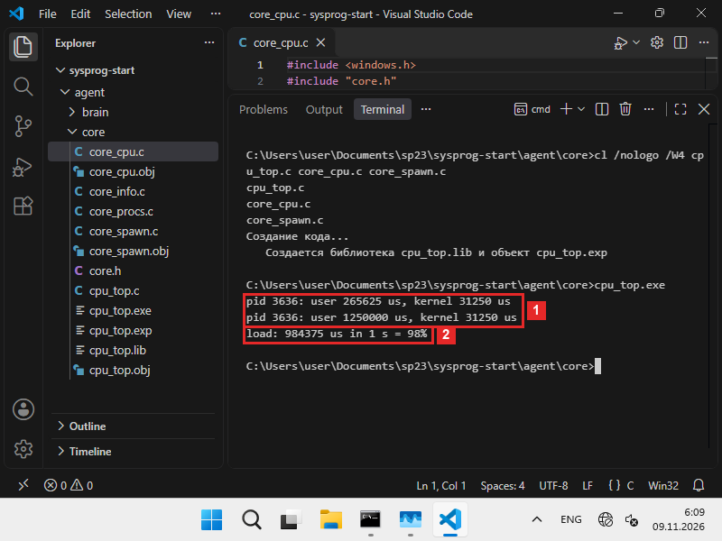
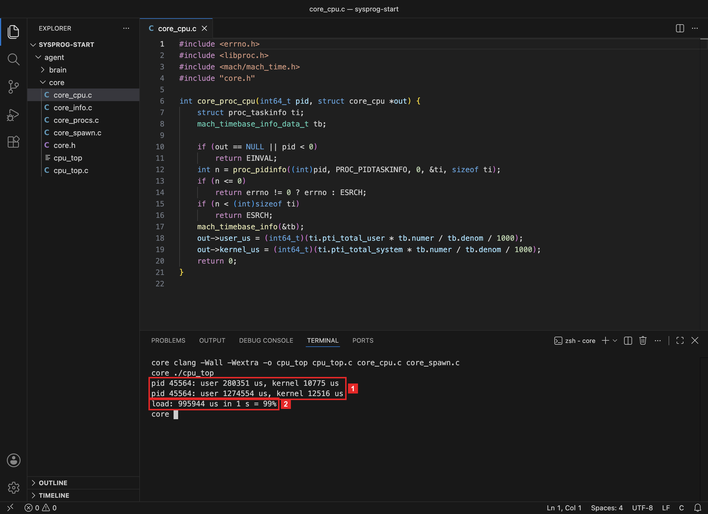
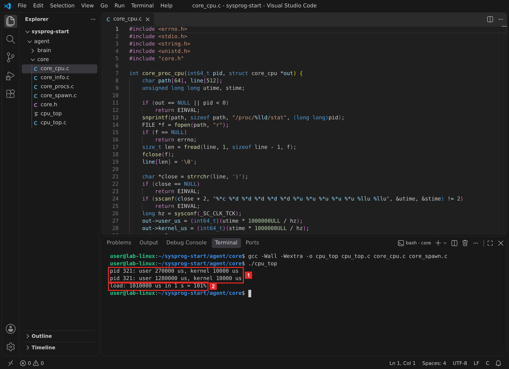
За секунду паузы нагрузка получила почти секунду процессорного времени: она занимала одно ядро целиком, как в ЛР 6. Числа трёх систем рядом:
Два замера нагрузки с паузой в секунду
| Система | user_us, замер 1 | user_us, замер 2 | Прирост за 1 с | Шаг счёта |
|---|---|---|---|---|
| Windows | 265 625 | 1 250 000 | 984 375 = 98% | 15 625 мкс |
| macOS | 280 351 | 1 274 554 | 995 944 = 99% | доли мкс |
| Linux | 270 000 | 1 280 000 | 1 010 000 = 101% | 10 000 мкс |
Числа — с кадров шага 3. В приросте учтено и время ядра системы; у Windows и Linux оно за секунду не изменилось.
По последнему столбцу видно, что система считает время шагами. В Windows все числа кратны 15 625 мкс — это 1/64 секунды, шаг системного таймера.В macOS числа идут без округления: тики Mach короче микросекунды.В Linux все числа кратны 10 000 мкс — один тик часов ядра. Поэтому загрузка за одну секунду может выйти чуть больше 100% или чуть меньше: в Linux лишний тик дал 101%. Чем длиннее пауза между замерами, тем меньше эта погрешность.
Что получилось.Ядро читает время работающего процесса, и загрузка нагрузки близка к 100%. Осталось проверить отказы: процесса нет и процесс чужой.
§5Шаг 4. Процесса нет и процесс чужой
Номер 2147483646 — на единицу меньше самого большого 32-битного числа со знаком. Процесса с таким номером нет ни в одной системе: в Windows номера процессов кратны 4, а в macOS и Linux так далеко не доходят. Номер 4 в Windows — процесс System, ядро системы.Номер 1 — первый процесс системы: launchd, он работает от имени администратора.в обычной Linux — systemd, в контейнере этого кадра — sleep, которым контейнер запущен. После каждого запуска печатается код завершения cpu_top:
cpu_top.exe 2147483646 echo %errorlevel% cpu_top.exe 4 echo %errorlevel%
./cpu_top 2147483646 echo $? ./cpu_top 1 echo $?
./cpu_top 2147483646 echo $? ./cpu_top 1 echo $?
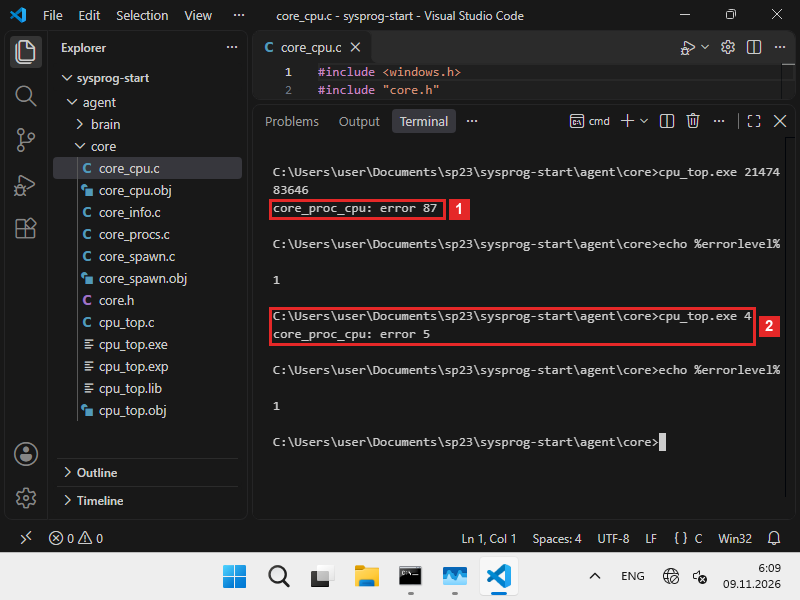
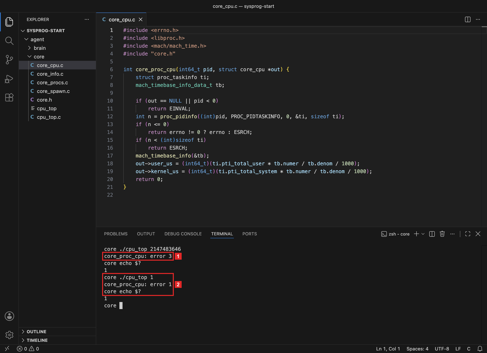
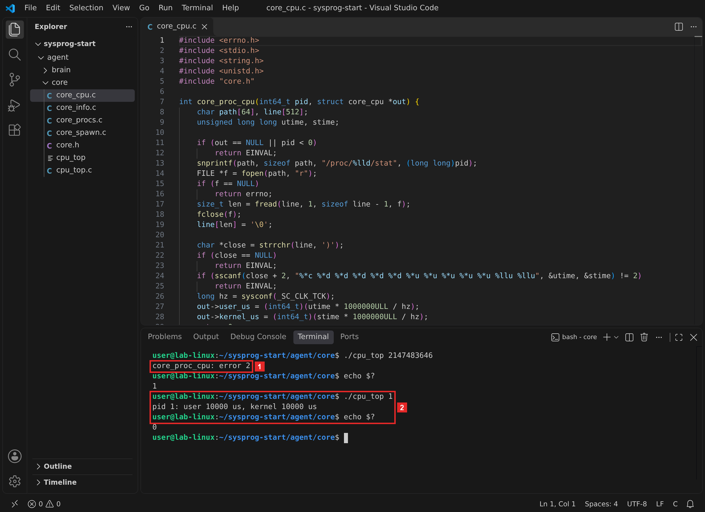
87 — ERROR_INVALID_PARAMETER: OpenProcess так отвечает на номер, которого нет. 5 — ERROR_ACCESS_DENIED: даже самое узкое право PROCESS_QUERY_LIMITED_INFORMATION к процессу System обычному пользователю не дают.
3 — ESRCH, «No such process». 1 — EPERM, «Operation not permitted»: launchd принадлежит администратору, и сведения о нём обычному пользователю закрыты.
2 — ENOENT: нет папки /proc/2147483646, а значит и файла stat в ней. Процесс 1 прочитан: файл /proc/PID/stat открыт для чтения всем пользователям.
Отказы ядро возвращает кодом, и cpu_top завершается с кодом 1. Для агента это обычная ситуация: в списке процессов всегда есть завершившиеся и чужие, и мозг должен их пропускать.
Что получилось.Ядро различает три исхода: время прочитано, процесса нет, процесс недоступен. Можно подключать функцию к мозгу.
§6Шаг 5. Посчитать загрузку в Python
Библиотека ядра теперь собирается из четырёх файлов. Программа cpu_top.c в неё не входит: в ней main.
cl /nologo /W4 /LD core_info.c core_procs.c core_spawn.c core_cpu.c /Fe:sentry_core.dll
clang -Wall -Wextra -shared -fPIC -o libsentry_core.dylib core_info.c core_procs.c core_spawn.c core_cpu.c
gcc -Wall -Wextra -shared -fPIC -o libsentry_core.so core_info.c core_procs.c core_spawn.c core_cpu.c
В brain.py добавляются класс CoreCpu после CoreProc, типы новой функции после типов core_wait и функции proc_cpu и cpu_load после wait:
class CoreCpu(ctypes.Structure): _fields_ = [ ("user_us", ctypes.c_int64), ("kernel_us", ctypes.c_int64), ] core.core_proc_cpu.argtypes = [ctypes.c_int64, ctypes.POINTER(CoreCpu)] core.core_proc_cpu.restype = ctypes.c_int def proc_cpu(pid): cpu = CoreCpu() if core.core_proc_cpu(pid, ctypes.byref(cpu)) != 0: return None return cpu.user_us + cpu.kernel_us def cpu_load(interval=1.0): procs = list_procs() before = {p["pid"]: proc_cpu(p["pid"]) for p in procs} start = time.monotonic() time.sleep(interval) after = {p["pid"]: proc_cpu(p["pid"]) for p in procs} wall_us = (time.monotonic() - start) * 1_000_000 load = [] for p in procs: a, b = before[p["pid"]], after[p["pid"]] if a is not None and b is not None: load.append({"pid": p["pid"], "name": p["name"], "cpu": round((b - a) * 100 / wall_us)}) return sorted(load, key=lambda x: x["cpu"], reverse=True)
Разбор brain.py · новые части по шагамвсе системы
Зачем эта программа. Дать мозгу две функции: proc_cpu читает процессорное время одного процесса, cpu_load считает загрузку всех процессов за интервал и сортирует их.
class CoreCpu(ctypes.Structure): _fields_ = [ ("user_us", ctypes.c_int64), ("kernel_us", ctypes.c_int64), ] core.core_proc_cpu.argtypes = [ctypes.c_int64, ctypes.POINTER(CoreCpu)] core.core_proc_cpu.restype = ctypes.c_int def proc_cpu(pid): cpu = CoreCpu() if core.core_proc_cpu(pid, ctypes.byref(cpu)) != 0: return None return cpu.user_us + cpu.kernel_us def cpu_load(interval=1.0): procs = list_procs() before = {p["pid"]: proc_cpu(p["pid"]) for p in procs} start = time.monotonic() time.sleep(interval) after = {p["pid"]: proc_cpu(p["pid"]) for p in procs} wall_us = (time.monotonic() - start) * 1_000_000 load = [] for p in procs: a, b = before[p["pid"]], after[p["pid"]] if a is not None and b is not None: load.append({"pid": p["pid"], "name": p["name"], "cpu": round((b - a) * 100 / wall_us)}) return sorted(load, key=lambda x: x["cpu"], reverse=True)
- Описать struct core_cpu
Два поля по 8 байт, как в
core.h. - Описать функцию ядра
Номер процесса —
c_int64, ответ — адрес структурыCoreCpu. - proc_cpu: время одного процесса
Возвращает сумму времени программы и времени ядра в микросекундах. Если процесс не читается — завершился или чужой, — функция возвращает
Noneбез исключения: в списке из сотен процессов такие есть всегда, и мозг их пропускает. - cpu_load: два снимка
Список процессов берётся один раз.
before— словарь «номер → время» до паузы,after— после.time.monotonic()— часы, которые идут только вперёд: перевод системных часов их не сдвигает. По ним считается настоящая длина паузыwall_us: обход сотен процессов тоже занимает время, и пауза выходит чуть длиннееinterval.Показания всех счётчиков воды в доме записывают утром и вечером, а расход считают по разнице.
- Посчитать загрузку и отсортировать
Процесс, который не прочитался хотя бы в одном снимке, пропускается. Для остальных прирост времени делится на длину паузы и умножается на 100.
sorted(…, reverse=True)ставит самые занятые процессы первыми.
Блок запуска в конце файла меняется: мозг запускает нагрузку — второй Python с пустым циклом на 3 секунды. Пока она работает, мозг считает загрузку всех процессов за секунду, берёт три самых занятых и кладёт их в сообщение под ключом top:
if __name__ == "__main__": child = spawn([sys.executable, "-c", "import time\nend = time.time() + 3\nwhile time.time() < end: pass"]) top = cpu_load(1.0)[:3] wait(child, 5000) message = {"event": "agent_started", "os": sys.platform, **get_info(), "child": child.pid, "top": top} print(json.dumps(message, ensure_ascii=False, indent=2)) if len(sys.argv) > 1: status, body = send(message, sys.argv[1]) print("n8n:", status, body)
cpu_load(1.0)[:3] — срез: первые три элемента отсортированного списка. wait(child, 5000) забирает код нагрузки, чтобы она не осталась зомби.
cd ..\brain python brain.py
cd ../brain python3 brain.py
cd ../brain python3 brain.py
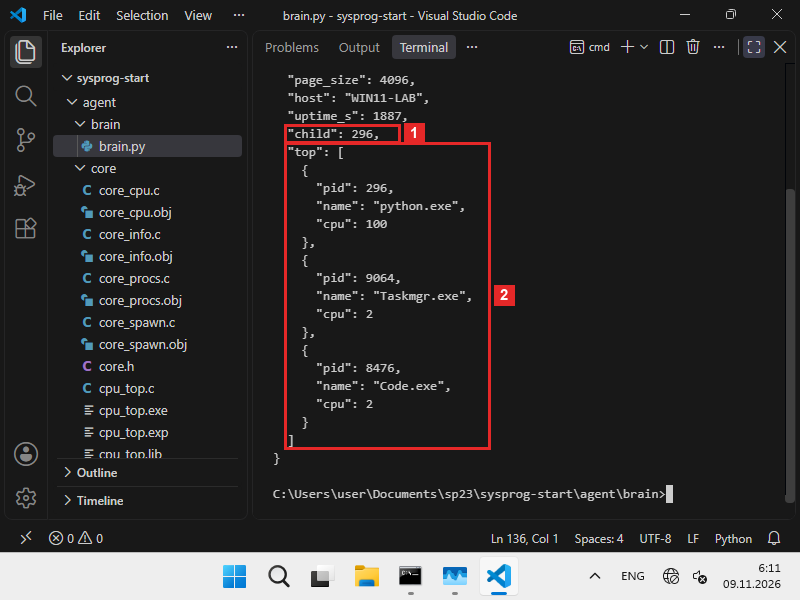
python.exe, 100%. Дальше Taskmgr.exe и Code.exe, по 2%.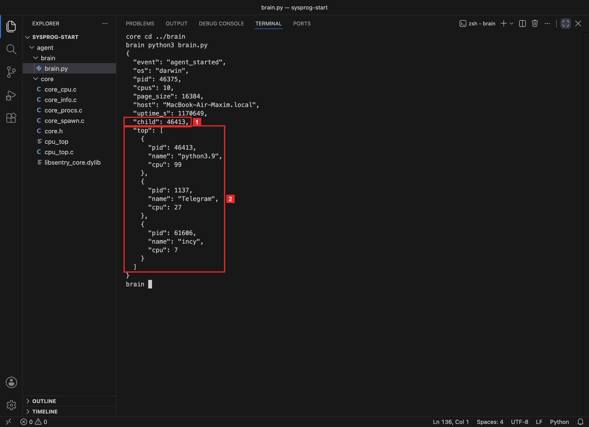
python3.9, 99%. Дальше Telegram — 27% и incy — 7%.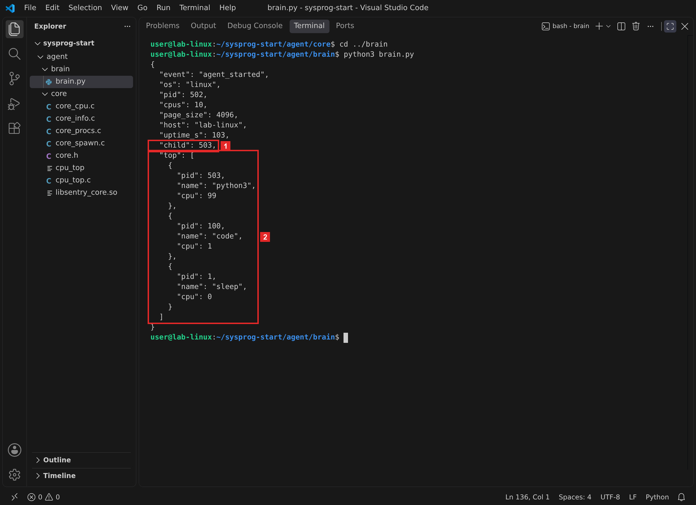
python3, 99%. Дальше VS Code — 1% и sleep — 0%.Мозг нашёл нагрузку сам: из сотен процессов первым оказался тот, номер которого совпадает с child. Остальные строки — обычная жизнь системы: Диспетчер задач и VS Codeмессенджер и другие программысам VS Code и процесс 1 контейнера занимают проценты, но не ядро целиком. Проценты считаются от одного ядра, как в top: процесс с несколькими потоками может показать больше 100%.
Что получилось.Мозг считает загрузку каждого процесса и находит самый занятый. Осталось отправить работу в репозиторий.
§7Шаг 6. Отправить в репозиторий
В репозиторий уходят исходники: core.h, core_cpu.c, cpu_top.c и brain.py. В agent/core/README.md дописываем строку о core_cpu.c и сборке библиотеки из четырёх файлов.
git add agent/core/core.h agent/core/core_cpu.c agent/core/cpu_top.c agent/core/README.md agent/brain/brain.py git commit -m "core: core_proc_cpu — процессорное время, brain: proc_cpu и cpu_load" git push
Перед git add посмотрите git status: собранную cpu_top.exe и файлы .obj, .lib, .expcpu_top допишите в .gitignore, если их там нет.
После отправки «Проверки» собирают библиотеку из всех файлов agent/core/*.c без main и запускают проверку 2. Она запускает два процесса Python: нагрузку с пустым циклом и спящий процесс. Через секунду она замеряет их время функцией core_proc_cpu, ещё через 3 секунды — снова. Проверка пройдена, если у нагрузки вышло от 80 до 120%, у спящего — не больше 10%, а для номера 2147483646 функция вернула код ошибки.
Что запускает и с чем сравнивает проверка 2
| Процесс | Что делает | Условие |
|---|---|---|
| нагрузка | пустой цикл 7 с | от 80 до 120% |
| спящий процесс | time.sleep(7) | не больше 10% |
| номер 2147483646 | процесса нет | код ошибки, не 0 |
Замер — два вызова core_proc_cpu с паузой 3 секунды; проценты — от одного ядра.
Каждая строка проверяет свою ошибку. Нагрузка ловит ошибку в единицах: при ней загрузка выходит меньше 80% или больше 120%. Спящий процесс ловит обратную ошибку — когда функция возвращает время, которое растёт само, например время с запуска процесса. Последняя строка проверяет, что для несуществующего процесса функция возвращает код ошибки.
Что получилось.Ядро и мозг с замером процессорного времени в репозитории. Последняя часть — что проверять, если такую функцию пишет помощник ИИ.
§8Запрос к помощнику ИИ
Функцию чтения времени помощник ИИ пишет быстро, и она работает: компилируется, возвращает 0, числа растут. Ошибка сидит в единицах: число, которое отдала система, переведено в микросекунды не тем множителем. Запрос в режиме Р2 из главы 0.3, когда код целиком пишет помощник:
Вот core.h. Напиши core_proc_cpu для WindowsmacOSLinux: по номеру процесса вернуть время в пользовательском режиме и в ядре в микросекундах.
Такую ошибку видно только на нагрузке с известной загрузкой. Для опыта сделаем копию core_cpu.c с одной изменённой строкой — так, как ошибается код от помощника — и соберём с ней cpu_top:
powershell -c "(gc core_cpu.c) -replace '/ 10\)', '/ 10000)' | sc ai_cpu.c" fc core_cpu.c ai_cpu.c cl /nologo /W4 cpu_top.c ai_cpu.c core_spawn.c /Fe:cpu_top_ai.exe cpu_top.exe | find "load" cpu_top_ai.exe | find "load"
sed 's/ \* tb.numer \/ tb.denom//' core_cpu.c > ai_cpu.c diff core_cpu.c ai_cpu.c clang -Wall -Wextra -o cpu_top_ai cpu_top.c ai_cpu.c core_spawn.c ./cpu_top | tail -1 ./cpu_top_ai | tail -1
sed 's/sysconf(_SC_CLK_TCK)/1000/' core_cpu.c > ai_cpu.c diff core_cpu.c ai_cpu.c gcc -Wall -Wextra -o cpu_top_ai cpu_top.c ai_cpu.c core_spawn.c ./cpu_top | tail -1 ./cpu_top_ai | tail -1
PowerShell читает файл (gc), заменяет / 10) на / 10000) и записывает результат (sc). fc сравнивает два файла и печатает различия, find "load" оставляет из вывода только строку с загрузкой.
sed заменяет текст в каждой строке файла, diff печатает различия двух файлов: строки со знаком < — из первого файла, со знаком > — из второго. tail -1 оставляет из вывода последнюю строку.
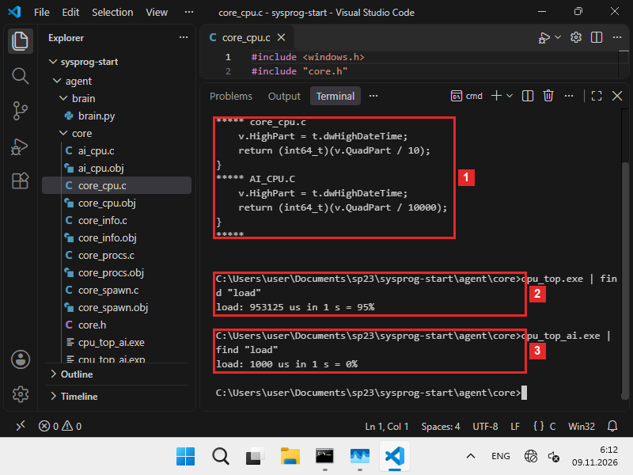
/ 10 и / 10000. 2 Ядро главы: 953 125 мкс за секунду, 95%. 3 Ядро с ошибкой: 1000 мкс, 0%.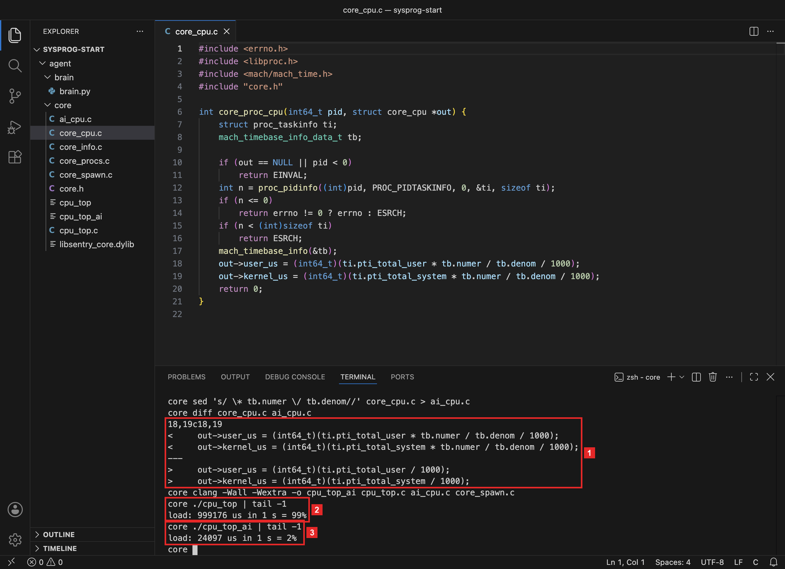
* tb.numer / tb.denom. 2 Ядро главы: 999 176 мкс за секунду, 99%. 3 Ядро с ошибкой: 24 097 мкс, 2%.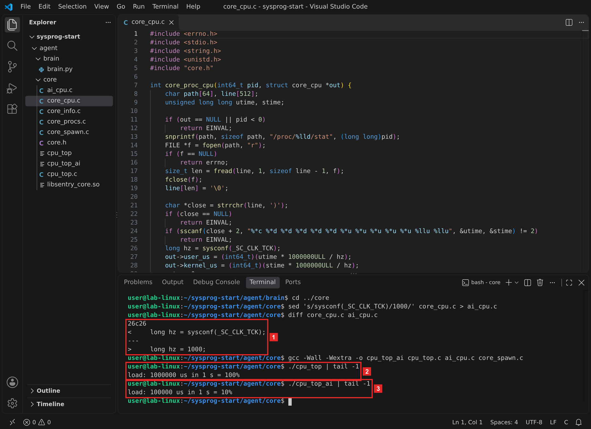
sysconf(_SC_CLK_TCK) и 1000. 2 Ядро главы: 1 000 000 мкс за секунду, 100%. 3 Ядро с ошибкой: 100 000 мкс, 10%.Результаты трёх систем сведены в таблицу:
Одна строка — другая загрузка
| Система | Строка в ядре главы | Строка в коде помощника | Ядро главы | Код помощника |
|---|---|---|---|---|
| Windows | QuadPart / 10 | QuadPart / 10000 | 95% | 0% |
| macOS | * tb.numer / tb.denom / 1000 | / 1000 | 99% | 2% |
| Linux | hz = sysconf(_SC_CLK_TCK) | hz = 1000 | 100% | 10% |
Числа — с кадров: одна и та же нагрузка, замер cpu_top с ядром главы и с ядром, где изменена одна строка.
Нагрузка одна и та же, а загрузка отличается в десятки раз. Деление на 10 000 переводит 100 нс в миллисекунды, а поле называется user_us: числа выходят в 1000 раз меньше настоящих.Без дроби numer / denom тики считаются наносекундами. На Mac с процессором Intel это верно, поэтому такой код часто встречается в примерах. На процессорах Apple тик длиннее в 125/3 раза, и числа выходят в 41,7 раза меньше.Код с hz = 1000 считает тик миллисекундой, а он длится 10 мс: числа выходят в 10 раз меньше. Компилятор на такую ошибку не предупреждает, проверка кода возврата её тоже пропускает: функция возвращает 0, и время растёт. Её ловит проверка 2, потому что у нагрузки известная загрузка — около 100%. Подсказка в её отчёте при такой ошибке — «проверьте единицы времени».
- единица времени взята из документации или у системы: 100 нс у
FILETIMEдробь изmach_timebase_infoчисло тиков в секунде изsysconf(_SC_CLK_TCK); - перевод в микросекунды записан одной формулой, и по ней видно, что умножение стоит раньше деления;
- дескриптор процесса закрывается на всех путях, и при ошибке тоже;ответ
proc_pidinfoсравнивается с размером структуры;конец имени процесса ищется по последней скобке, функциейstrrchr; cpu_topна нагрузке показывает около 100%, а проверка 2 пройдена.
Первые три пункта проверяются чтением кода, последний — запуском.
§9Справка: функции и команды
| Что нужно | Windows | macOS | Linux |
|---|---|---|---|
| Время процесса | OpenProcess + GetProcessTimes | proc_pidinfo(PROC_PIDTASKINFO) | файл /proc/PID/stat, поля 14 и 15 |
| Единица | 100 нс | тик Mach, длина — mach_timebase_info | тик часов ядра, 1/sysconf(_SC_CLK_TCK) с |
| Шаг счёта на кадрах | 15 625 мкс | доли мкс | 10 000 мкс |
| Процесса нет | 87 ERROR_INVALID_PARAMETER | 3 ESRCH | 2 ENOENT |
| Процесс чужой | 5 ERROR_ACCESS_DENIED | 1 EPERM | читается |
| Загрузка | (время₂ − время₁) ÷ пауза × 100%; 100% — одно ядро целиком | ||
| Собрать библиотеку | cl /LD core_info.c core_procs.c core_spawn.c core_cpu.c | clang -shared -fPIC … | gcc -shared -fPIC … |
§10Частые вопросы
§11Проверьте себя
Что хранят поля user_us и kernel_us?
Сколько микросекунд процесс выполнял свой код и сколько микросекунд ядро системы работало по его просьбам, за всю жизнь процесса.
Почему загрузку нельзя получить одним вызовом core_proc_cpu?
Один вызов даёт время с запуска процесса. Загрузка — прирост времени за известную паузу, поэтому нужны два замера и разница между ними.
Как перевести время системы в микросекунды на вашей системе?
Число FILETIME в отрезках по 100 нс разделить на 10.Тики Mach умножить на numer, разделить на denom из mach_timebase_info — это наносекунды — и разделить на 1000.Тики умножить на 1 000 000 и разделить на sysconf(_SC_CLK_TCK), обычно 100.
Почему в Linux нагрузка за секунду может показать 101%?
Время считается тиками по 10 мс. Если за паузу счётчик прибавил 101 тик вместо 100, прирост выходит 1 010 000 мкс. Чем длиннее пауза, тем меньше такая погрешность.
Зачем proc_cpu в мозге возвращает None при ошибке?
Среди сотен процессов всегда есть завершившиеся и чужие. Исключение остановило бы весь подсчёт, а None позволяет пропустить такой процесс и посчитать остальные.
Как заметить ошибку в единицах времени?
Запустить нагрузку с известной загрузкой — пустой цикл — и замерить её. Должно выйти около 100%. 0, 2 или 10% значат, что перевод в микросекунды сделан не тем множителем.
§12Шпаргалка по главе
struct core_cpu: user_us, kernel_us16 байтcore_proc_cpu(pid, &cpu)GetProcessTimes, ÷ 10proc_pidinfo, × numer ÷ denom ÷ 1000/proc/PID/stat, × 10⁶ ÷ hzproc_cpu(pid) — мкс или Nonecpu_load(1.0) — список по убываниюИтог главы
Ядро агента получило функцию core_proc_cpu: по номеру процесса она возвращает его процессорное время в микросекундах. В Windows время берётся из GetProcessTimes в отрезках по 100 нс.В macOS время берётся из proc_pidinfo в тиках Mach и переводится дробью mach_timebase_info.В Linux время берётся из полей 14 и 15 файла /proc/PID/stat в тиках по 10 мс. Программа cpu_top.c показала, что нагрузка за секунду получает почти секунду времени, а для несуществующего и чужого процесса ядро возвращает код ошибки. Мозг из двух снимков посчитал загрузку всех процессов и первым нашёл нагрузку. Копия ядра с одной изменённой строкой показала ошибку в единицах: та же нагрузка выглядит загруженной на 0%2%10%, и заметить это можно только на нагрузке с известной загрузкой.
- Кадры и выводы: macOS 26.1, Apple clang 17, Python 3.9 из Command Line Tools; Linux — контейнер Debian 13, gcc 14.4, Python 3.13; Windows 11 ARM64 в VirtualBox, MSVC 19.44 (ядро и программы собраны для ARM64), Python 3.14 для ARM64; VS Code 1.144.
GetProcessTimes,FILETIME,OpenProcess,PROCESS_QUERY_LIMITED_INFORMATION— Microsoft Learn, GetProcessTimes; коды 5 и 87 — System Error Codes.proc_pidinfo,struct proc_taskinfo— заголовкиlibproc.hиsys/proc_info.hSDK macOS;mach_timebase_info— Apple Developer, mach_timebase_info_data_t.- Поля
/proc/PID/stat,utimeиstimeв тикахsysconf(_SC_CLK_TCK)— man 5 proc_pid_stat.